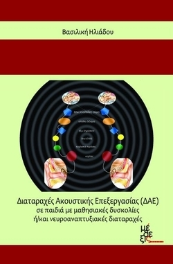
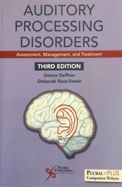
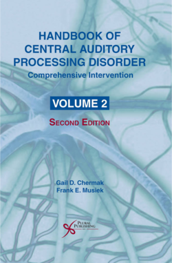

Διαταραχές Ακουστικής Επεξεργασίας (ΔΑΕ)
Το 2015 εκδόθηκε το πρώτο στην ελληνική βιβλιογραφία σύγγραμμα για τις Διαταραχές Ακουστικής Επεξεργασίας (ΔΑΕ). Πρόκειται για μια σύγχρονη προσέγγιση με θέμα τις Διαταραχές Ακουστικής Επεξεργασίας σε παιδιά με μαθησιακές δυσκολίες ή/και νευροαναπτυξιακές
διαταραχές. Η συγγραφική ομάδα υπό το συντονισμό και την επίβλεψη της Καθηγήτριας Β. Ηλιάδου περιλαμβάνει ειδικούς από τους χώρους της ψυχοακουστικής, λογοθεραπείας, ειδικής αγωγής, ψυχιατρικής, ωτορινολαρυγγολογίας
και παιδοακουολογίας. Κάθε κεφάλαιο έχει γραφτεί με ιδιαίτερη προσοχή και σαφήνεια και συμπληρώνεται από ερωτήσεις για περαιτέρω προβληματισμό και εμβάθυνση. Αποτελεί άριστο συμπλήρωμα των σεμιναρίων ΔΑΕ, όπως διαμορφώθηκαν
τα τελευταία χρόνια.

Auditory Processing Disorders
Πρόκειται για την 3η έκδοση Αμερικάνικου συγγράμματος με λεπτομέρειες για την λήψη ιστορικού, την διάγνωση, τις συμπεριφορές και την συννοσηρότητα της Διαταραχής Ακουστικής Επεξεργασίας με εκτενή αναφορά στις επιπτώσεις στην γλώσσα και την μαθησιακή ανάπτυξη.
Περιέχει κεφάλαια για πρακτική θεραπευτική αντιμετώπιση, στρατηγικές αντιμετώπισης και χρήση τεχνολογίας σε θεραπευτικά προγράμματα. Η τρίτη έκδοση παρουσιάζει την συνεχιζόμενη μελέτη, έρευνα και εξέλιξη της πρακτικής
εφαρμογής από κορυφαίους επιστήμονες από όλο τον κόσμο. Η συγγραφική ομάδα των κορυφαίων επιστημόνων βελτιώνει την ποιότητα ζωής ατόμων με ΔΑΕ σε παγκόσμιο επίπεδο. Νέα κεφάλαια από τους Harvey Dillon, Sharron Cameron
(Australia), Doris Bamiou (UK), and Vasiliki Vivian Iliadou (Greece).

Handbook of Central Auditory Processing Disorder
Αυτό το βραβευμένο δίτομο σύγγραμμα επιμελήθηκε από δύο κορυφαίους Αμερικανούς Ακουολόγους τους Gail D. Chermak και Frank E. Musiek. Αποτελεί αναλυτική προσέγγιση της ΔΑΕ με ιστορικά στοιχεία, ερευνητική μεθοδολογία και σύνδεση με τις αρχές της Ψυχοακουστικής,
εκτεταμένη παρουσίαση της έρευνας στον τομέα της ΔΑΕ, συμπτωματολογία, ανίχνευση, διάγνωση και αντιμετώπιση της διαταραχής. Επικεντρώνεται στην νευρολογική βάση της ΔΑΕ και στην ετερογένεια της συμπτωματολογίας και
των επιπτώσεων στην προσοχή, την μάθηση και την επικοινωνία. Υπάρχει κεφάλαιο από Doris Bamiou (UK), and Vasiliki Vivian Iliadou (Greece) για την αμιγώς ιατρική προσέγγιση της ΔΑΕ με ανάλυση της λήψης ιστορικού, χρήσης
ερωτηματολογίων, καταγραφή δυσκολιών του ατόμου, διάγνωση και αντιμετώπιση βασισμένη στο τρίπτυχο ακουστική εκπαίδευση, ακουστική ενίσχυση και προσαρμογή του περιβάλλοντος στις ανάγκες του ατόμου.